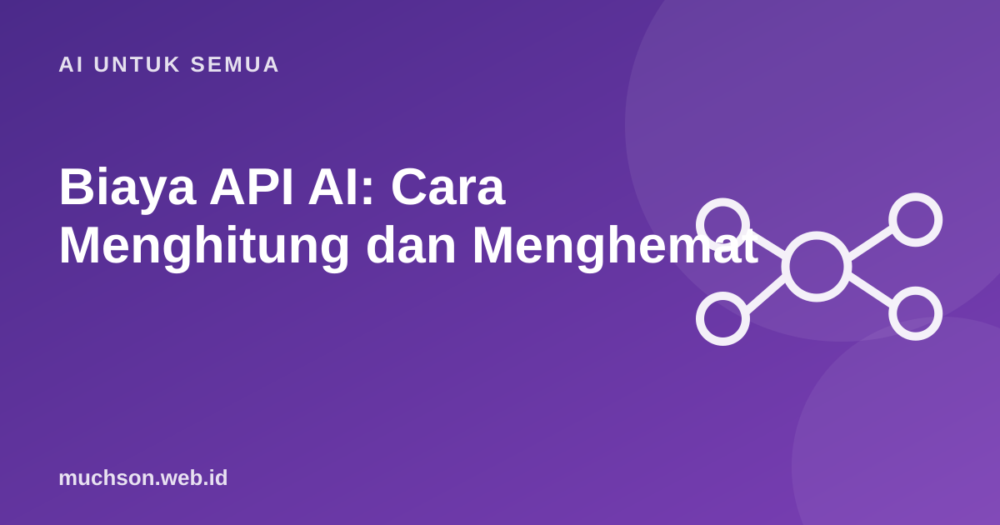

Beranda › Artikel › AI untuk Semua
AI untuk SemuaBiaya API AI: Cara Menghitung dan Menghemat
Prototipe AI biasanya murah: beberapa ribu rupiah sehari. Masalah muncul saat pengguna bertambah dan setiap permintaan membawa riwayat percakapan panjang. Memahami cara biaya dihitung membantu Anda memutuskan desain sejak awal, bukan setelah tagihan datang.

Rumus dasarnya
Hampir semua penyedia menagih per juta token, dengan harga berbeda untuk input (yang Anda kirim) dan output (yang dihasilkan model). Output biasanya beberapa kali lebih mahal daripada input.
biaya per permintaan =
(token_input / 1.000.000) × harga_input
+ (token_output / 1.000.000) × harga_outputToken input mencakup semua yang dikirim: system prompt, riwayat percakapan, dokumen hasil pencarian (RAG), definisi alat, dan pertanyaan pengguna.
Kalkulator biaya bulanan
Angka bawaan di kalkulator hanya contoh. Harga berubah dan berbeda antar model; selalu cek halaman harga resmi penyedia.
Tujuh cara menghemat
Pantau sejak hari pertama
- Simpan
input_tokensdanoutput_tokenssetiap permintaan ke log atau database. - Hitung biaya per pengguna dan per fitur, bukan hanya total.
- Pasang batas pengeluaran dan peringatan di dashboard penyedia.
- Batasi jumlah permintaan per pengguna per hari.
Tanya jawab
Bagaimana menghitung jumlah token sebelum mengirim?
Apakah model open source lebih murah?
Apakah langganan chatbot sama dengan API?
Sumber dan bacaan lanjut
- Claude Docs: Prompt caching
- Claude Docs: Batch processing
- Apa itu token dan context window (artikel terkait)